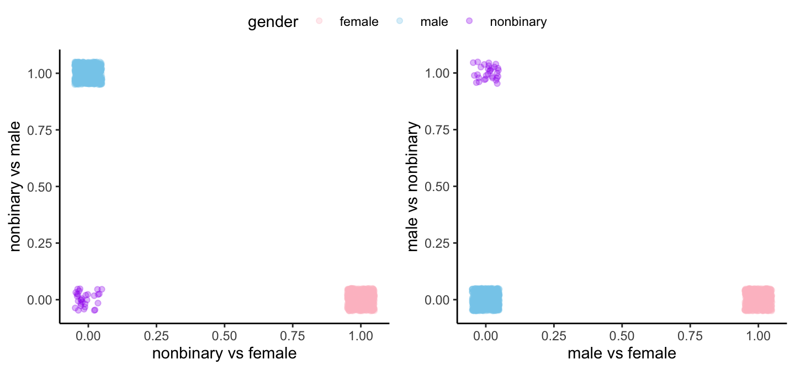

EXAMPLE 4 (Optional) Categorical Data & Symmetries in Rotated models

The next set of regression results use the second axis system, where the x1-axis represents females, and the x2-axis represents nonbinary folk. The origin therefore represent males. There is a clear symmetry between the first set of regression results and the second. The third axis system, using nonbinary and male for the axes, would produce a similar symmetry.
| hair length | ||
| original model | rotated model | |
| (1) | (2) | |
| male vs female | 8.700*** | |
| (0.207) | ||
| male vs nonbinary | 2.658*** | |
| (0.770) | ||
| nonbinary vs female | 6.042*** | |
| (0.770) | ||
| orthogonal to nonbinary vs female | 11.358*** | |
| (0.824) | ||
| Constant | 1.931*** | 6.249*** |
| (0.146) | (0.103) | |
| Observations | 1,630 | 1,630 |
| Adjusted R2 | 0.520 | 0.520 |
| F Statistic (df = 2; 1627) | 884.884*** | 884.884*** |
| Note: | p<0.05; p<0.01; p<0.001 | |
Note: The coefficients for y ~ new.direction + new.dir.orth have been scaled to be interpreted in units of x1.